What Is a Caltrop?
CaltropRoman CaltropWhat Is a CaltropTribulusRoman ArmyVegetius
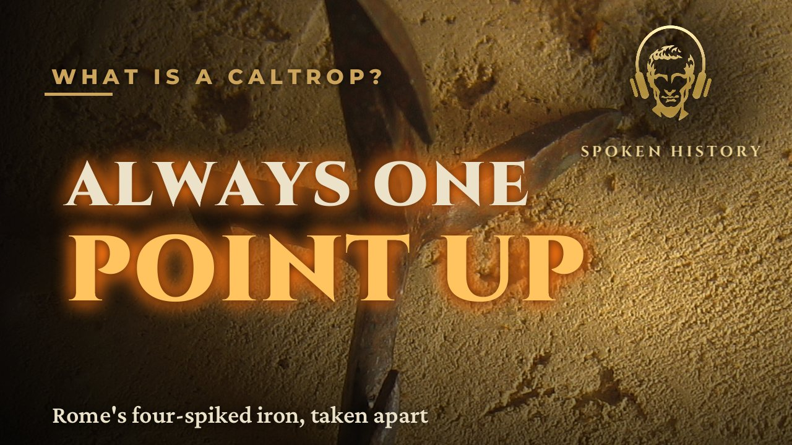
Autumn, 331 B.C. A plain in what is now northern Iraq. Two armies are about to meet. Then a deserter comes running across the ground to Alexander the Great. His news, according to the Roman writer Quintus Curtius: the Persian king, Darius, has buried iron spikes in the earth, right where he expects the Macedonian cavalry to charge. And the spot is marked with a sign, so the Persians know where not to ride.
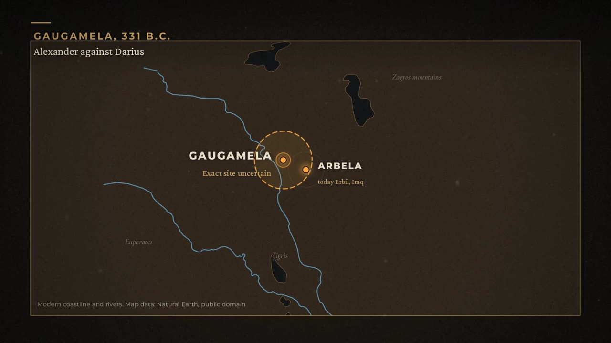
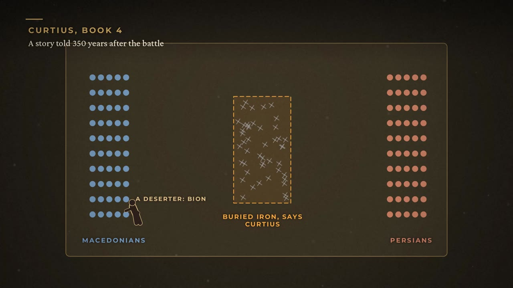
Caltrops. A few centimetres of iron, with four spikes. If you've seen our scorpion and onager videos, this is the opposite. No spring. No crew. No skill needed. Today we're taking one apart. What it is. What the Romans called it. What has actually been dug up. And how much of the famous stories we can trust. Because the evidence, as usual, is thinner than the legend.
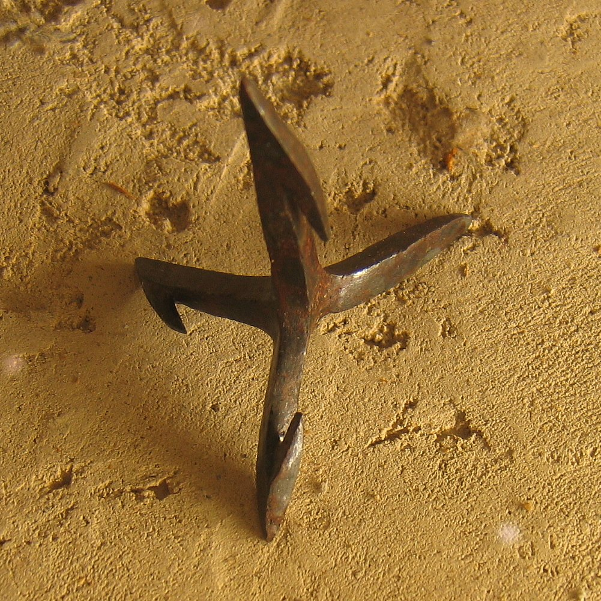
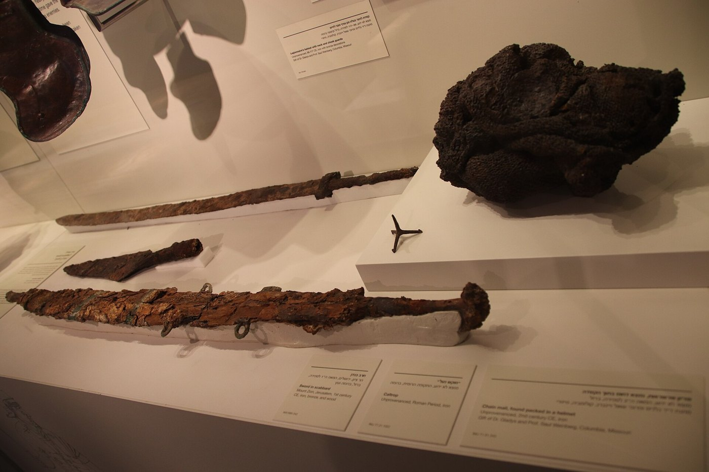
What is a caltrop?
So, what is a caltrop? A small iron object with four sharp points, arranged so that, whichever way it lands, three points rest on the ground, and the fourth stands up. The Roman writer Vegetius describes exactly that. However you throw it, he says, it stands on three rays, and the fourth is upright, and hostile. It isn't a clever design. It's a geometry trick. Four points, spaced like the corners of a pyramid, so it can't lie flat. And it's small. The Roman ones from the fort at Tyras, on the Black Sea, are about five centimetres across.
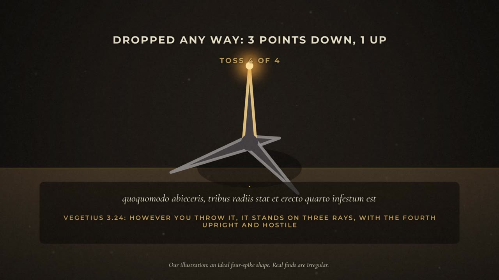
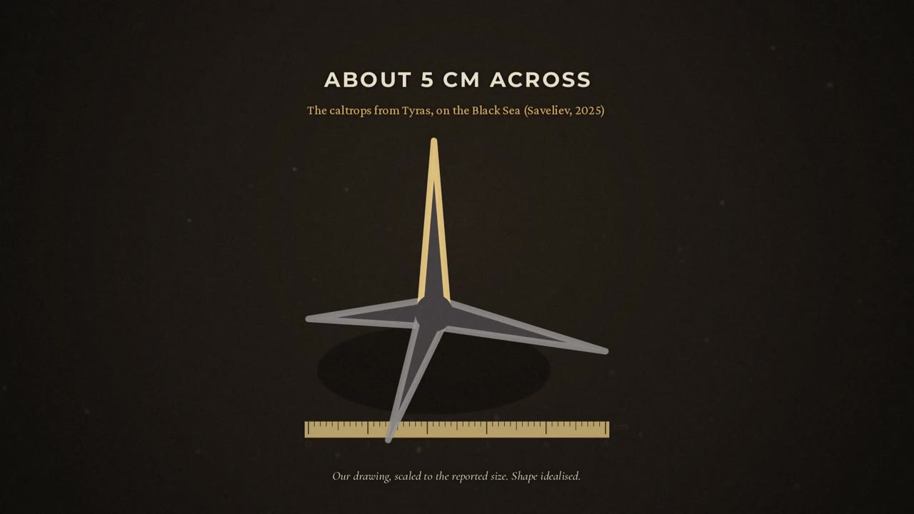
What the Romans called it
Now, the names. The Romans called it a tribulus. The word is borrowed from Greek, where tribolos was also the name of a spiny plant. Botanists still call the caltrop plant Tribulus. Latin has another word, murex, which is also a spiny shellfish. Curtius uses it for the spikes at Gaugamela. So does another Roman writer, Valerius Maximus. And the English word, caltrop? Dictionaries trace it through medieval Latin, to words for treading, and for a trap. Careful, though. Vegetius also uses tribulus for the wooden stakes of a camp's palisade. Same word, different thing.
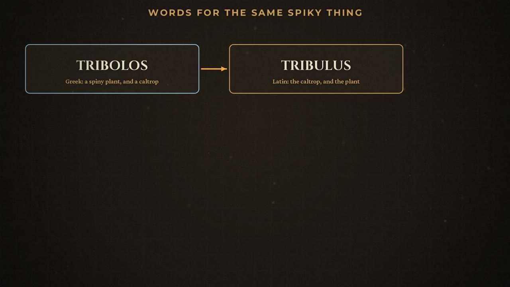
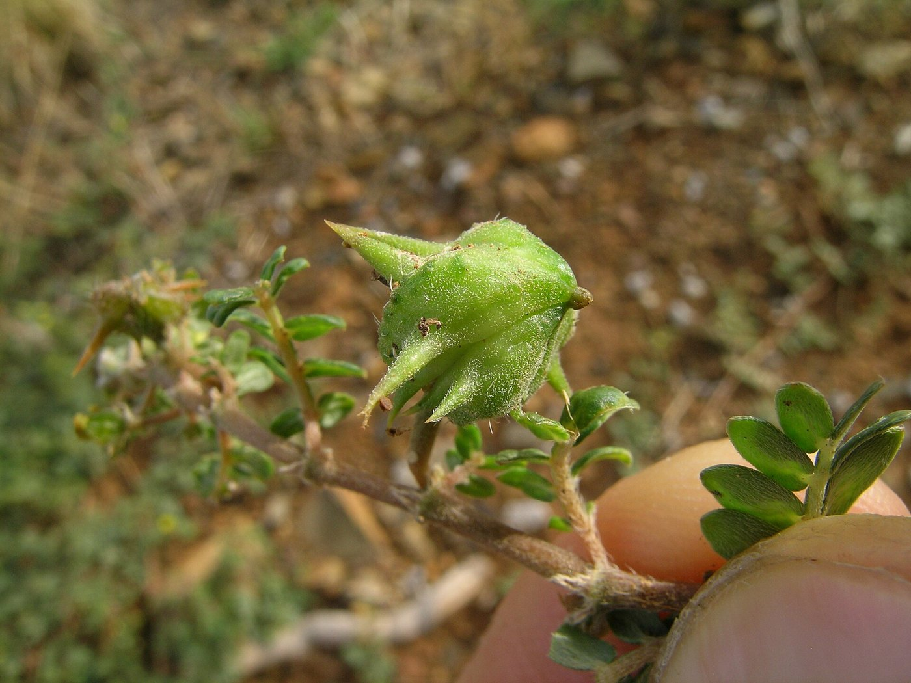
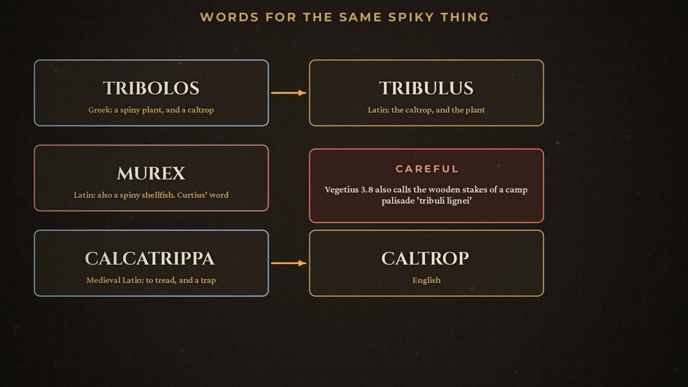
Did you know? The Greek word tribolos, and the Latin tribulus, named a spiny plant as well as the weapon. Botanists still call the caltrop plant Tribulus.
Did Darius bury them? Curtius against Arrian
Back to Gaugamela, and that deserter. In Curtius, Alexander calls his officers together, tells them where the marked ground is, and warns the cavalry to keep away from it. It's a good story. It might even be true. But look at who tells it. Arrian, who draws on officers who were there, says only that Alexander's general Parmenio wanted the ground checked first, for hidden ditches and stakes. No caltrops. No deserter. Diodorus, in his long account of the battle, has no spikes at all. So buried caltrops at Gaugamela come from one writer, more than three centuries after the battle. Possible. Not proven.
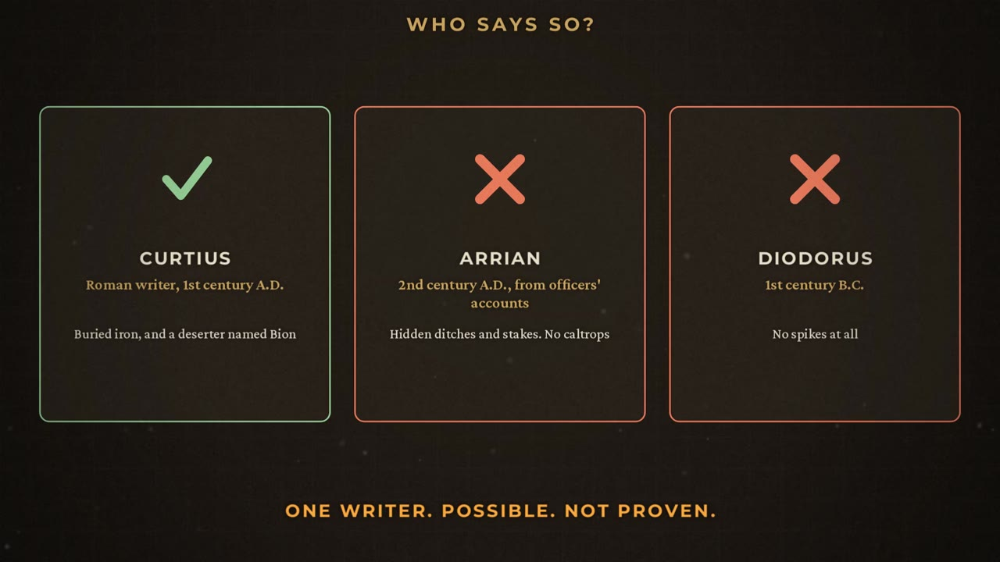
Vegetius and the scythed chariots
The best-known Roman story is about chariots. Some armies fitted their chariots with scythe blades. Vegetius says they terrified at first, then became a joke. They need flat ground, and one wounded horse can stop them. But they perished most, he writes, to a trick of Roman soldiers. When battle was joined, the Romans suddenly threw caltrops across the whole field. The chariots ran onto them, and were destroyed. Vegetius names no battle, no commander, no date. He wrote in the late empire, about an older army. So this tells us what a Roman writer thought caltrops were for. Not what happened on a particular field.
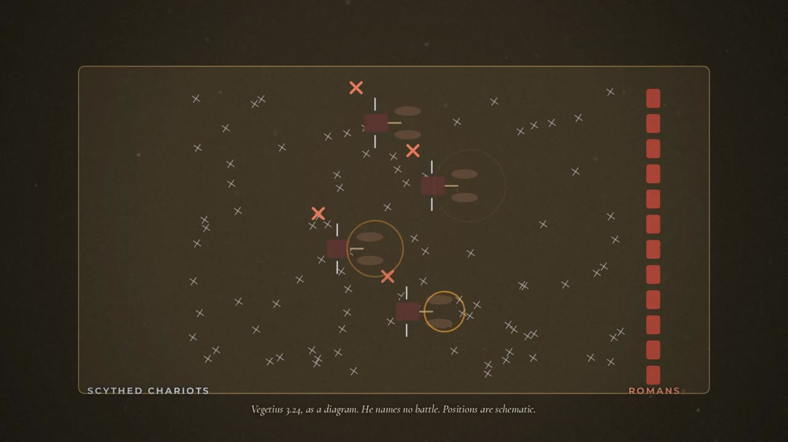
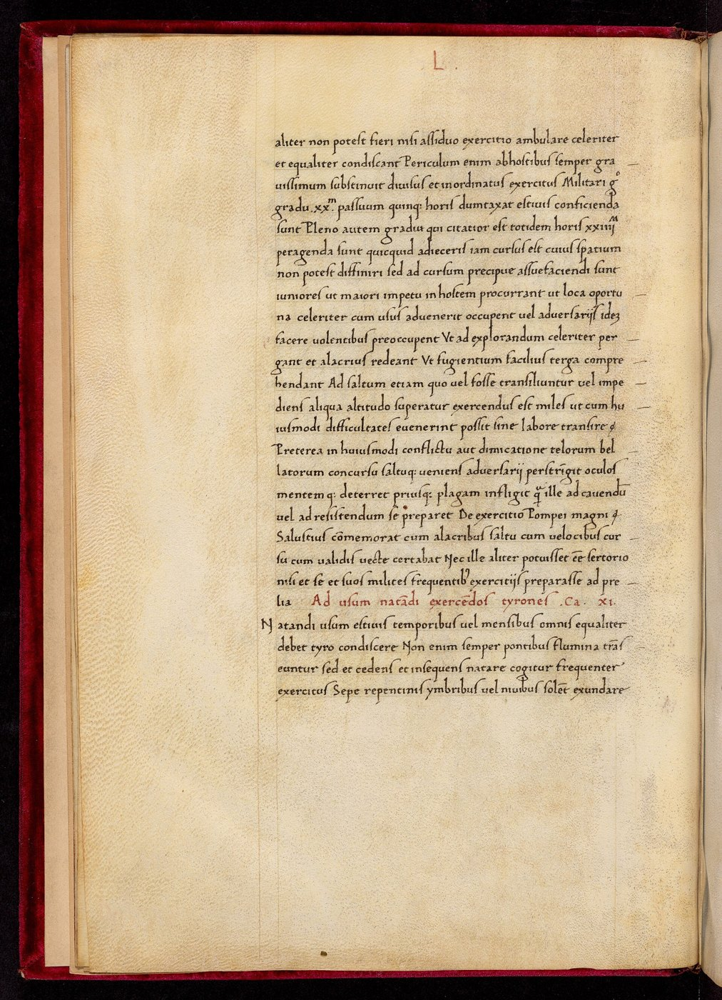
The general who refused them
Here's a different Roman story, and I like it better. Valerius Maximus tells of Scipio Aemilianus, besieging a very strong city. His advisers suggest scattering iron spikes around its walls, so the besieged can't rush out. Scipio answers that it doesn't belong to the same man to want to capture people, and to be afraid. It's a story about courage, told to praise him. But look at what it takes for granted: that caltrops were a familiar idea, and that a proud commander might see them as a sign of fear.
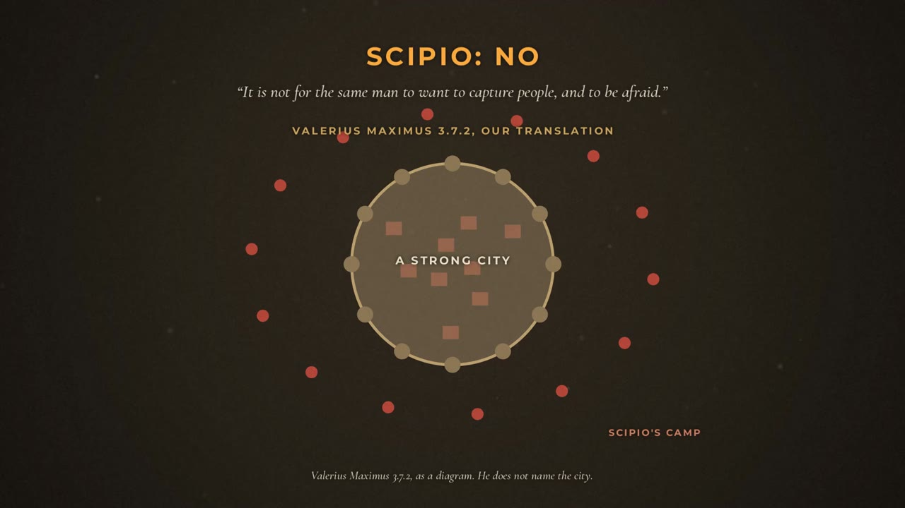
Did you know? In Valerius Maximus' story, Scipio Aemilianus is advised to scatter iron spikes around a besieged city. He answers that it does not belong to the same man to want to capture people, and to be afraid.
What archaeology has found
So what has actually been dug up? Iron caltrops, four-pronged, turn up in Roman military sites across the empire. A recent study from Tyras lists finds in Gaul, Dacia, Germany, Austria, Croatia and Britain. At Caerleon, in Wales, seventeen were found at the site of the legionary barracks, fourteen of them in one room. They're third century. More at Newstead, in Scotland. At Enns, on the Danube. And at Tyras, in a building that one excavator thought might have been an arsenal. In the reports we read, the finds come in handfuls. We don't know how many an army carried.
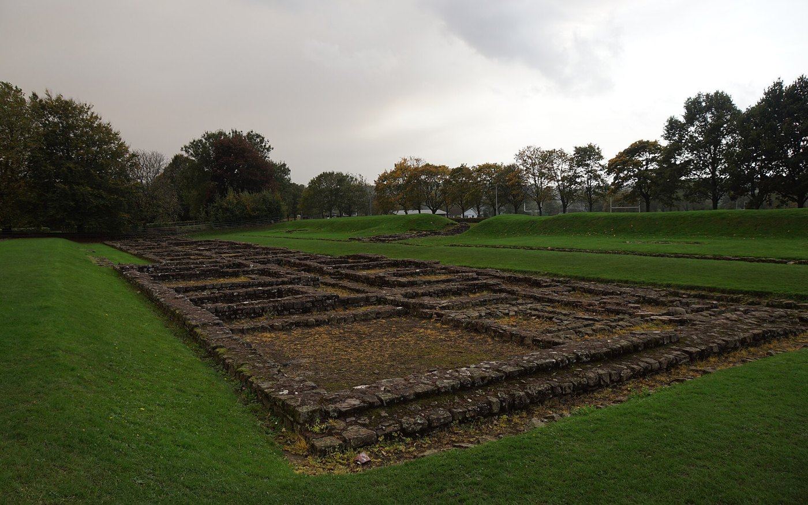
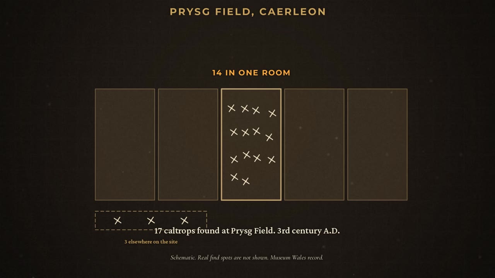
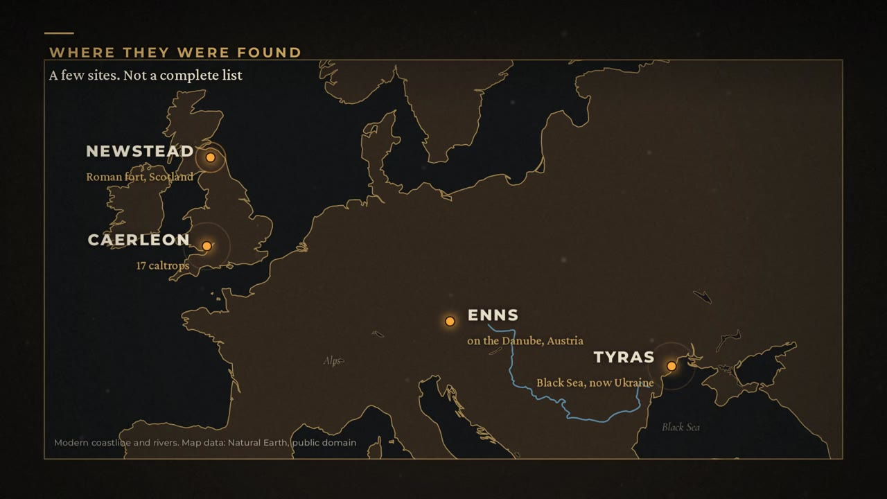
Did you know? At Caerleon in Wales, seventeen caltrops were found at the site of the legionary barracks, and fourteen of them lay in one room. They are third century.
A label from Enns
Here are some from the Roman museum at Enns, in Austria. Second to fourth century. The museum's own label says they were mostly an obstacle to stop an approach. Thrown down, they always land with one point up. Not one is a work of art. Rough iron, small enough to carry by the handful.
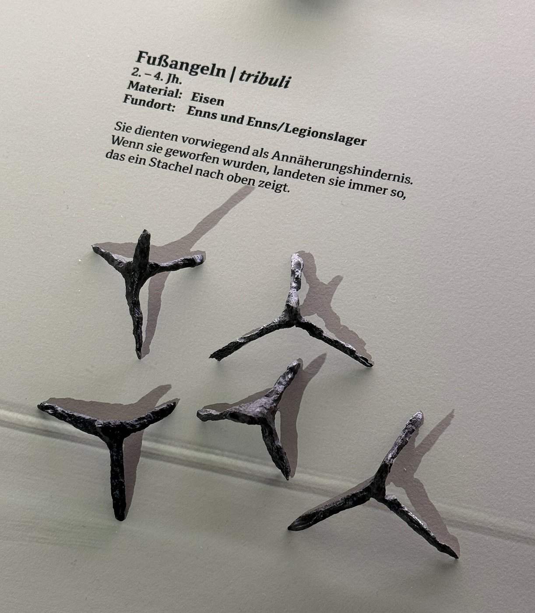
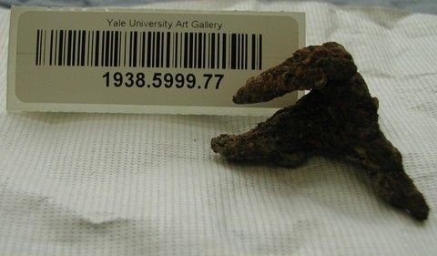
How were they used?
How were they used? Here the evidence runs thin. Against horses and chariots, in Curtius and Vegetius. As an obstacle on an approach, on the museum's reading. Buried with a point showing, or thrown onto the surface. Everything else is guesswork. How they were carried. Who laid them. Whether they were collected again. We don't know.
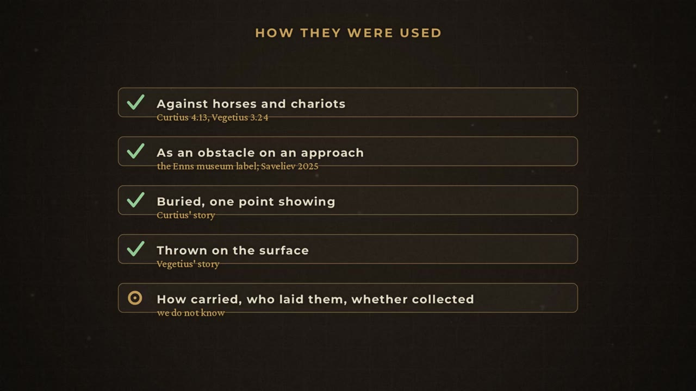
Three myths
Three myths. One. Caesar used caltrops at Alesia. Not in his own account. What he describes buried across the ground are foot-long logs with iron hooks in them. He calls them stimuli. Spurs. A different object, a similar idea. Two. Caltrops won battles. In the texts we've read, they stop chariots and horses. None says they decided a battle. Three. It was a Roman invention. Not at all. Iron caltrops sit in museums in Korea and Inner Mongolia too, and the Latin word was borrowed from Greek.
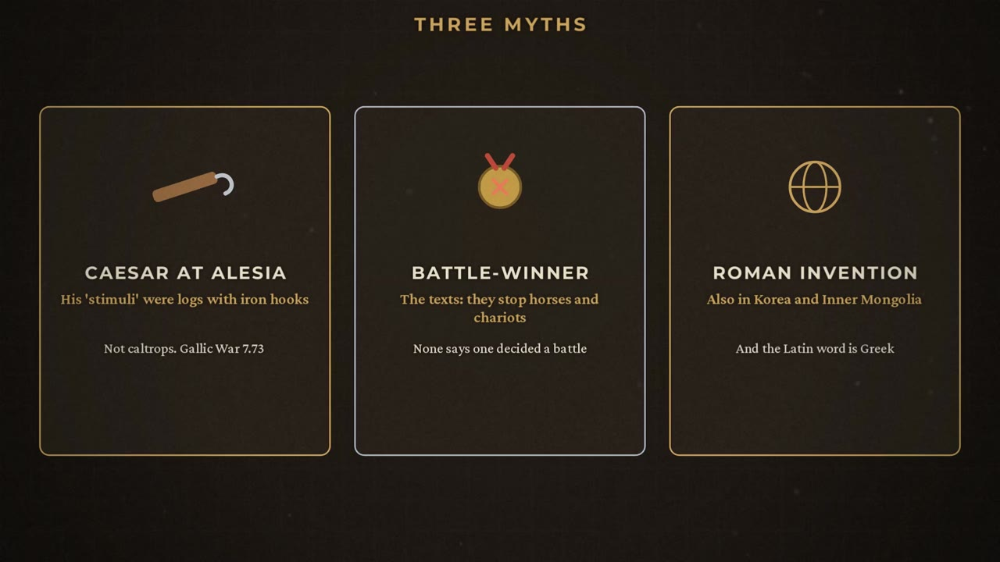
What we really have
So, what do we really have? Real objects. Four-pointed iron, about five centimetres, from Roman military sites in several provinces. A few Roman texts. One definition. A chariot story. A buried-iron story from Alexander's war. And a commander who said no. What we don't have: numbers, a battle where we can see them at work, or an eyewitness account of one doing its job.
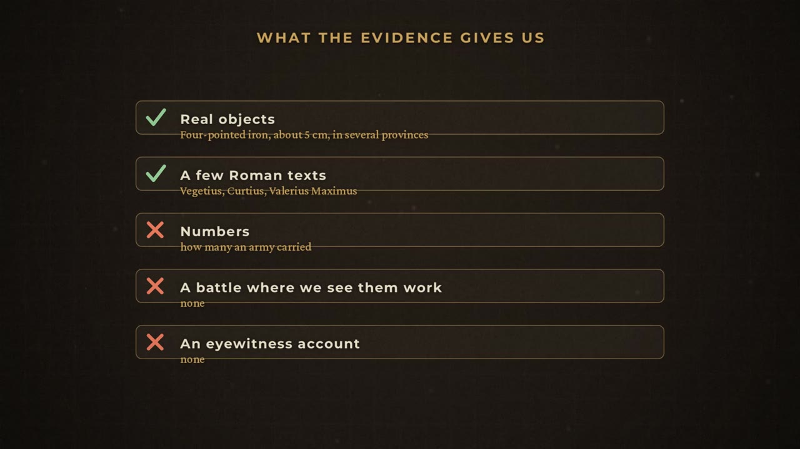
Verdict, and what comes next
So that's the caltrop. One of the smallest weapons we've looked at on this channel. And one of the oldest ideas. Make the ground itself dangerous. Next up is another small piece of Roman iron. The dagger. The pugio.
Over to you
Would you have scattered them, or answered like Scipio? What next after the pugio: the gladius or the segmented armour?
Prefer to watch? The video on YouTube covers the same story with the full animations. Jump to a part:
- 0:00 A deserter at Gaugamela, 331 B.C.
- 1:08 What is a caltrop?
- 1:47 What the Romans called it
- 2:31 Did Darius bury them? Curtius against Arrian
- 3:17 Vegetius and the scythed chariots
- 4:00 The general who refused them
- 4:39 What archaeology has found
- 5:21 A label from Enns
- 5:43 How were they used?
- 6:08 Three myths
- 6:51 What we really have
- 7:20 Verdict, and what comes next
Quick answers
What is a caltrop?
A small iron object with four sharp points arranged like the corners of a pyramid, so that however it lands, three points rest on the ground and the fourth stands up. Roman examples from Tyras are about five centimetres across.
What did the Romans call a caltrop?
Tribulus, a word borrowed from the Greek tribolos, which also named a spiny plant. Latin also has murex, a spiny shellfish, which Curtius uses for the spikes at Gaugamela.
Did Darius bury caltrops at Gaugamela?
Only Curtius, writing more than three centuries after the battle, says so. Arrian and Diodorus do not mention caltrops. It is possible, but not proven.
Did Caesar use caltrops at Alesia?
Not in his own account. He describes foot-long logs with iron hooks buried across the ground, which he calls stimuli, or spurs: a different object, a similar idea.
What have archaeologists found?
Four-pronged iron caltrops turn up at Roman military sites in Gaul, Dacia, Germany, Austria, Croatia and Britain. At Caerleon in Wales, seventeen were found at the legionary barracks, fourteen of them in one room.
Where it happened
- Gaugamela (northern Iraq) (331 B.C.): Where Curtius says Darius buried iron spikes. The exact site of the battle is uncertain.
- Caerleon (Wales) (A.D. 250): Seventeen caltrops, fourteen of them in one room of the legionary barracks. Third century.
- Newstead (Scotland) (A.D. 150): A caltrop from the Roman fort, 1st and 2nd centuries.
- Enns (Austria) (A.D. 250): Caltrops in the Roman museum, 2nd to 4th century.
- Tyras (Bilhorod-Dnistrovskyi, Ukraine) (A.D. 200): Caltrops about 5 cm across from a building thought by one excavator to be an arsenal.
Sources
Ancient writers and modern work
Ancient writers (Latin read directly from thelatinlibrary.com on 2026-11-12; translations are our own; Arrian read in the 1893 Chinnock translation on Project Gutenberg, Diodorus in Loeb/LacusCurtius)
Archaeology and museums
Words
Image credits
- The Prysg Field barracks at Caerleon today. Photo: Otter, CC BY-SA 4.0
- A Roman iron caltrop, Westphalian Museum of Archaeology, Herne. Photo: Bullenwaechter, CC BY-SA 3.0
- A Roman-period caltrop, Israel Museum, Jerusalem. Photo: Gary Todd, CC0
- Tribulus terrestris, the caltrop plant. Photo: Harry Rose, CC BY 2.0
- Vegetius, De re militari, 15th-century Italian manuscript. Boston Public Library, public domain
- An iron caltrop, Yale University Art Gallery (1938.5999.77), CC0
- Caltrops in the Roman Museum, Enns. Photo: Dguendel, CC BY 4.0
- Animations, maps and diagrams: original work, Spoken History. Map data: Natural Earth, public domain.
Transcript
Read the full narration
What Is a Caltrop?. Rome's four-spiked iron, and its myths. Autumn, 331 B.C. A plain in what is now northern Iraq. Two armies are about to meet. Then a deserter comes running across the ground to Alexander the Great. His news, according to the Roman writer Quintus Curtius: the Persian king, Darius, has buried iron spikes in the earth, right where he expects the Macedonian cavalry to charge. And the spot is marked with a sign, so the Persians know where not to ride. Caltrops. A few centimetres of iron, with four spikes. If you've seen our scorpion and onager videos, this is the opposite. No spring. No crew. No skill needed. Today we're taking one apart. What it is. What the Romans called it. What has actually been dug up. And how much of the famous stories we can trust. Because the evidence, as usual, is thinner than the legend. So, what is a caltrop? A small iron object with four sharp points, arranged so that, whichever way it lands, three points rest on the ground, and the fourth stands up. The Roman writer Vegetius describes exactly that. However you throw it, he says, it stands on three rays, and the fourth is upright, and hostile. It isn't a clever design. It's a geometry trick. Four points, spaced like the corners of a pyramid, so it can't lie flat. And it's small. The Roman ones from the fort at Tyras, on the Black Sea, are about five centimetres across. Now, the names. The Romans called it a tribulus. The word is borrowed from Greek, where tribolos was also the name of a spiny plant. Botanists still call the caltrop plant Tribulus. Latin has another word, murex, which is also a spiny shellfish. Curtius uses it for the spikes at Gaugamela. So does another Roman writer, Valerius Maximus. And the English word, caltrop? Dictionaries trace it through medieval Latin, to words for treading, and for a trap. Careful, though. Vegetius also uses tribulus for the wooden stakes of a camp's palisade. Same word, different thing. Back to Gaugamela, and that deserter. In Curtius, Alexander calls his officers together, tells them where the marked ground is, and warns the cavalry to keep away from it. It's a good story. It might even be true. But look at who tells it. Arrian, who draws on officers who were there, says only that Alexander's general Parmenio wanted the ground checked first, for hidden ditches and stakes. No caltrops. No deserter. Diodorus, in his long account of the battle, has no spikes at all. So buried caltrops at Gaugamela come from one writer, more than three centuries after the battle. Possible. Not proven. The best-known Roman story is about chariots. Some armies fitted their chariots with scythe blades. Vegetius says they terrified at first, then became a joke. They need flat ground, and one wounded horse can stop them. But they perished most, he writes, to a trick of Roman soldiers. When battle was joined, the Romans suddenly threw caltrops across the whole field. The chariots ran onto them, and were destroyed. Vegetius names no battle, no commander, no date. He wrote in the late empire, about an older army. So this tells us what a Roman writer thought caltrops were for. Not what happened on a particular field. Here's a different Roman story, and I like it better. Valerius Maximus tells of Scipio Aemilianus, besieging a very strong city. His advisers suggest scattering iron spikes around its walls, so the besieged can't rush out. Scipio answers that it doesn't belong to the same man to want to capture people, and to be afraid. It's a story about courage, told to praise him. But look at what it takes for granted: that caltrops were a familiar idea, and that a proud commander might see them as a sign of fear. If you are enjoying this type of content, please don't forget to subscribe. So what has actually been dug up? Iron caltrops, four-pronged, turn up in Roman military sites across the empire. A recent study from Tyras lists finds in Gaul, Dacia, Germany, Austria, Croatia and Britain. At Caerleon, in Wales, seventeen were found at the site of the legionary barracks, fourteen of them in one room. They're third century. More at Newstead, in Scotland. At Enns, on the Danube. And at Tyras, in a building that one excavator thought might have been an arsenal. In the reports we read, the finds come in handfuls. We don't know how many an army carried. Here are some from the Roman museum at Enns, in Austria. Second to fourth century. The museum's own label says they were mostly an obstacle to stop an approach. Thrown down, they always land with one point up. Not one is a work of art. Rough iron, small enough to carry by the handful. How were they used? Here the evidence runs thin. Against horses and chariots, in Curtius and Vegetius. As an obstacle on an approach, on the museum's reading. Buried with a point showing, or thrown onto the surface. Everything else is guesswork. How they were carried. Who laid them. Whether they were collected again. We don't know. Three myths. One. Caesar used caltrops at Alesia. Not in his own account. What he describes buried across the ground are foot-long logs with iron hooks in them. He calls them stimuli. Spurs. A different object, a similar idea. Two. Caltrops won battles. In the texts we've read, they stop chariots and horses. None says they decided a battle. Three. It was a Roman invention. Not at all. Iron caltrops sit in museums in Korea and Inner Mongolia too, and the Latin word was borrowed from Greek. So, what do we really have? Real objects. Four-pointed iron, about five centimetres, from Roman military sites in several provinces. A few Roman texts. One definition. A chariot story. A buried-iron story from Alexander's war. And a commander who said no. What we don't have: numbers, a battle where we can see them at work, or an eyewitness account of one doing its job. So that's the caltrop. One of the smallest weapons we've looked at on this channel. And one of the oldest ideas. Make the ground itself dangerous. Two questions for you. If you were a Roman commander, would you have scattered them, or answered like Scipio? And after the pugio, what should I take apart next? The gladius, or the segmented armour, the lorica segmentata? Next up is another small piece of Roman iron. The dagger. The pugio. It's on your screen right now. Tap it, and I'll see you there.
All 16 topics
More episodes

The Roman Scorpion: Rome's Sniper Weapon
A Gaulish warrior on a burning wall is hit by a bolt from a machine he never saw. The Roman scorpion was a torsion bolt-shooter powered by twisted sinew and hair. How it worked, who built...
Read the story
The Roman Onager: Rome's One-Armed Stone-Thrower
A one-armed Roman stone-thrower, named after a wild ass, shook Persian siege towers apart at Amida in A.D. 359. How it worked, how it was crewed and carried, what it really did, and what...
Read the story
What Was a Pugio?
A coin struck by Caesar's killers shows two daggers. The pugio, Rome's short dagger, appears in the stories of Caesar, Scaevinus, Arria and Sertorius, none of them a battle. What museums...
Read the story